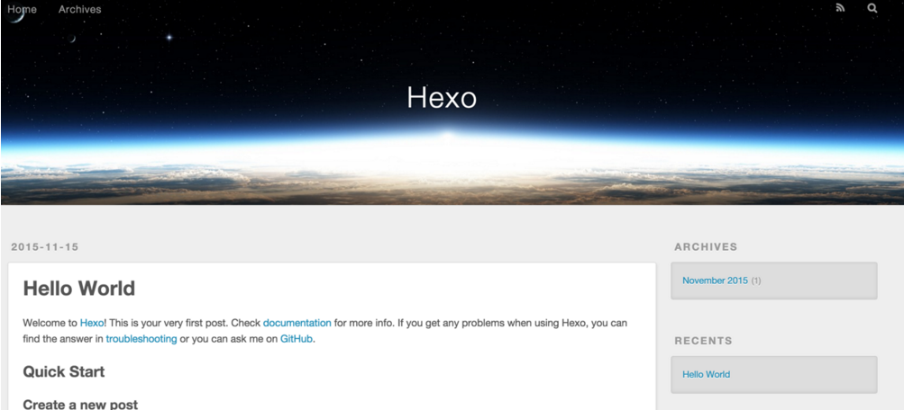

准备工作
-
安装node 到Node.js官网下载相应平台的最新版本，一路安装即可。
-
在终端控制台输入命令：
npm install -g hexo -
输入命令
hexo -v显示hexo的版本号即为安装成功 -
github的准备
git config --global user.email xxx@163.com
git config --global user.name xxx
ssh-keygen -t rsa -C xxx@163.com(邮箱地址) // 生成ssh
找到.ssh文件夹打开，使用cat id_rsa.pub //打开公钥ssh串
登陆github，settings － SSH keys － add ssh keys（把上面的内容全部添加进去即可）
初始化
新建文件夹（比如Blog），然后进入Blog目录，以下所有的命令行操作都是在这个文件夹下进行的。
$ hexo init
生成静态页面
初始化完成之后，就已经生成一篇“hello word”的文章了，现在执行以下命令把文章编译为静态页面：
$ hexo generate
本地启动
把文章变为页面之后，可以执行以下命令，本地启动服务，在浏览器中输入http://localhost:4000/查看生成的页面效果。
$ hexo server
最终效果如下： 
更换主题
clone主题代码 在目录下执行下面的命令clone主题代码：
$ git clone https://github.com/litten/hexo-theme-yilia.git themes/yilia
修改配置文件
修改Blog/_config.yml文件：
theme: yilia //默认为landscape
修改themes/yilia/_config.yml文件：
# Header
menu:
主页: /
所有文章: /archives
丝茉茉: /categories/simomo/
相册: /photos
# SubNav
subnav:
github: "https://github.com/paulhappy"
weibo: "http://weibo.com/u/paulhappy"
zhihu: "#"
rss: /atom.xml
# Content
excerpt_link: 阅读全文
fancybox: true
mathjax: true
top: true
# 是否开启动画效果
animate: true
# 是否在新窗口打开链接
open_in_new: false
# Miscellaneous
google_analytics: ''
favicon: /favicon.ico
#你的头像url
avatar: /img.png
#是否开启分享
share_jia: true
share_addthis: false
#是否开启多说评论，填写你在多说申请的项目名称 duoshuo: duoshuo-key
#若使用disqus，请在博客config文件中填写disqus_shortname，并关闭多说评论
duoshuo: jarson7426
#是否开启云标签
tagcloud: true
#是否开启友情链接
#不开启——
friends: false
#开启——
#friends:
# 百度一下: http://www.baidu.com
# 淘宝商城: http://www.taobao.com
#是否开启“关于我”。
#不开启——
#aboutme: false
#开启——
aboutme: true
查看效果 更改主题之后可以使用命令hexo server打开本地服务，查看效果。
部署到github
上面所有的操作完成之后，你就可以将你的Blog项目部署到github上了。
部署之前先修改Blog/_config.yml文件。
deploy:
type: git
repository: https://github.com/paulhappy/paulhappy.github.io.git //paulhappy替换为你自己的用户名
branch: master
备注：在hexo3.x版本下，这里的type应该填git，不是github；另外冒号后面都有一个英文的空格，不然会报错的。
然后使用以下命令进行部署。
$ hexo deploy